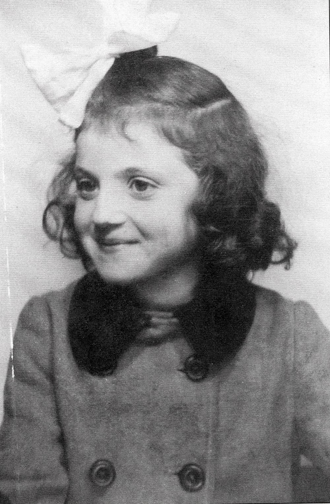

Portrait d’archive
Enfants Last
Cécile Laur LAST
Céline Laur LAST est née le 13/12/1934 à Leipzig en Allemagne.
Rassemblée à Lyon, elle est déportée à Auschwitz le 11/08/1944 par le convoi n°78. Elle est morte en déportation.
Arrêtée le jour de son anniversaire à Lyon ; déportée avec ses parents Leib et Charlotte Bau et son frère Joaquim.
Dernière adresse connue : 18, cours Morand (Lyon)
Nom : LAST
Prénom(s) : Cécile Cilly Cecilia Laur Tzipora
Date naissance : 13/12/1934
Âge (ans) : 9
Lieu naissance : Leipzig
Pays ou département : Allemagne
Lieu rassemblement : Lyon
Dernière adresse : 18 cours Morand ou 159 Rue Pierre Corneille, Lyon 3
Ville : Lyon
Code postal : 69
N° Convoi : 78
Date déportation : 11/08/1944
Informations diverses : Cilli dite Cécile Last est née le 13/12/1934 à Leipzig (Allemagne). Fille de Leib (Israel Yehuda) Last (06/04/1899 à Rozwadow, Pologne) et de Charlotte (Sara Sheindl) née Bac ou Bau (23/07/1902, Leipzig, Allemagne). Elle arrive en France le 13/05/1940. Elle devient pensionnaire au château de l'Union générale des israélites de France à Chabannes, le 23/04/1942, elle vient alors de l'UGIF de Palavas-les-Flots (Hérault). Leib, Charlotte et leurs enfants Joachim et Cecilia Last sont arrêtés à Lyon le 1er août 1944 dans des circonstances inconnues. Cécile est internée seule à l’Hôpital de l’ Antiquaille du 01/08/1944 au 11/08/1944 (Cahier de Mme Cahen) alors que sa famille est internée à la prison Montluc à Lyon. Elle est déportée avec ses parents Leib et Charlotte et son frère Joaquim (Source: Doulut Alexandre, Labeau Sandrine, « Parcours de vie de déportés : les archives comme matériaux », Le Genre humain, 2012/1 (N° 52), p. 97-120.) par le convoi 78 parti de Lyon (Rhône) le 11/08/1944 avec ses parents, Leib et Charlotte, et son frère Joachim âgé de 16 ans. Seuls ses frères sont revenus de déportation.
Son frère Hans dit Jacques (09/07/1926, à Leipzig) se trouve en août 1942, interne à la ferme-école La Roche de l'ORT (Organisation Reconstruction Travail, organisme juif de formation professionnelle) à côté de Monbahus (Lot-et-Garonne, France). Il est arrêté le 26 août 1942 avec 5 autres jeunes juifs. Il passe par le camp de Casseneuil (Lot-et-Garonne) et est transféré au camp de Drancy (Seine-Saint-Denis) en septembre 1942. Le 09/07/1942, Hans Last est déporté par le convoi 30 à destination d’Auschwitz-Birkenau. Hans Last a réussi à survivre jusqu’à l’évacuation de Blechhammer le 21 janvier 1945 (Source: Parcours de vie de déportés : A. Doulut et S. Labeau “les archives comme matériaux” 2012).
Ses frères Jean (Hans) et Joachim déposeront des fiches de témoignage sur leur famille à l’Institut Yad Vashem à Jérusalem respectivement en 1956 et 1973.
Lieu de déportation : Auschwitz
Lieu de départ : Lyon
Nombre total de déporté·e·s du convoi : 430
Gazé·e·s à l'arrivée : 128 (29,8 %)
Survivant·e·s en 1945 : 36 (8,4 %)
Joachim Jean LAST (S)
Joachim Jean Jacques LAST est né le 27/11/1927 à Leipzig en Allemagne.
Rassemblé à Lyon, il est déporté à Auschwitz le 11/08/1944 par le convoi n°78.
Arrêtée à Lyon ; déportée avec ses parents Leib et Charlotte et sa sœur Cécile.
Adresses connues :
18, cours Morand (Lyon)
159, rue Pierre Corneille (Lyon)
Nom : LAST
Prénom(s) : Joachim Jean Jacques
Date naissance : 27/11/1927
Âge (ans) : 16
Lieu naissance : Leipzig
Pays ou département : Allemagne
Lieu rassemblement : Lyon
Dernière adresse : 18 cours Morand ou 159 Rue Pierre Corneille, Lyon 3
Ville : Lyon
Code postal : 69
N° Convoi : 78
Date déportation : 11/08/1944
Informations diverses : Fils de Leib Last (06/04/1899 à Rozwadow, Pologne) et de Charlotte (Sheindl) Last née Bau (1902, Leipzig, Allemagne). Charlotte Bau et Leib Last, se sont mariés en 1924 à Leipzig, la ville de naissance de Charlotte (le 23 septembre 1902) et des quatre enfants. Les Last vivent à Leipzig au 41 Nordstrasse jusqu’en 1939. Leib Last arrive en Belgique le 24 mai 1939, sa femme et ses enfants, le 31 juillet suivant. L’invasion allemande le 10 mai 1940 achève cet intermède belge qui n’aura duré qu’un an. Les Last réussissent à prendre un des trains en partance vers la France. Ce train sillonne la France pendant quatre jours avant de s’arrêter à Revel en Haute-Garonne. Les Last s’installent alors à Saint-Julia, mais sans Leib qui est envoyé à l’hôpital psychiatrique de Braqueville à Toulouse (n’ayant pas de papiers d’identité, mais seulement un titre de voyage sur lequel figurent un aigle et une croix gammée, le réfugié est soupçonné par les gendarmes d’être un agent nazi). Après l’armistice du 22 juin 1940, il est libéré et rejoint sa famille. En mai 1940, la famille arrive à Saint-Julia (Haute-Garonne). La famille est internée à Agde, puis à Rivesaltes.
Hans, interne dans une ferme-école pour garçons à Penne-d’Agenais en Lot-et-Garonne au lieu-dit Laroche sous l’égide de l’ORT (Organisation Reconstruction Travail, organisme juif de formation professionelle) est arrêté le 26 août 1942 avec 5 autres jeunes juifs. Le 09/07/1942, Hans Last est déporté par le convoi 30 à destination d’Auschwitz-Birkenau. Transféré, Hans Last a réussi à survivre jusqu’à l’évacuation de Blechhammer le 21 janvier 1945 (Source: Parcours de vie de déportés : A. Doulut et S. Labeau “les archives comme matériaux” 2012).
Le reste de la famille s’installe dans la région de Lyon pendant deux ans. Ils n’ont pas été inquiétés durant les rafles puisqu’ils n’étaient pas recensés comme Juifs. Leib, Charlotte, Joachim et Cecilia Last sont arrêtés à Lyon le 1er août 1944 dans des circonstances inconnues – au mois d’août 1944. La famille est déportée de Lyon le 11 août 1944 par le convoi n°78, avec leurs deux plus jeunes enfants, Cécile et Joachim.
Seul Joachim a survécu et a retrouvé son frère Hans, rescapé du convoi n°30. Ils émigrent en Australie en 1948. Il témoignera sur le sort de sa famille à Yad Vashem.
Lieu de déportation : Auschwitz
Lieu de départ : Lyon
Nombre total de déporté·e·s du convoi : 430
Gazé·e·s à l'arrivée : 128 (29,8 %)
Survivant·e·s en 1945 : 36 (8,4 %)